About Me
Coding Projects
Personal Website
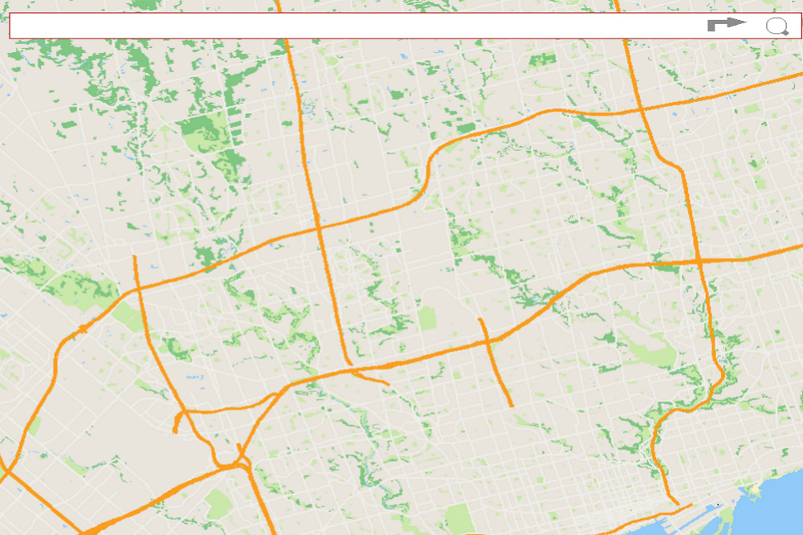
City Maps

Verilog Pokemon
Why
My interest piqued up when my friends started to create their own websites to get themselves and identity online. To me, this looked like a great chance to challenge myself and learn something new.
Design process
The big question that I wanted to answer when I was building my website was what is the best way to express myself? Personally, it's through my projects where I can show what I value through the decisions I make. So, I was naturally inclined to make a project portfolio. Despite tempted to just link every project I did to my GitHub, I don't believe that source code is the right medium to document decision making. I'm not perfect, and my ideas definitely aren't either.

Keeping track of my thoughts and drafts provides a basis where other people and I can learn what works and what doesn't. I value the learning process that comes from each mistake. The most trouble I had with this website was the layout. In the end I decided to follow the footsteps of facebook and youtube.
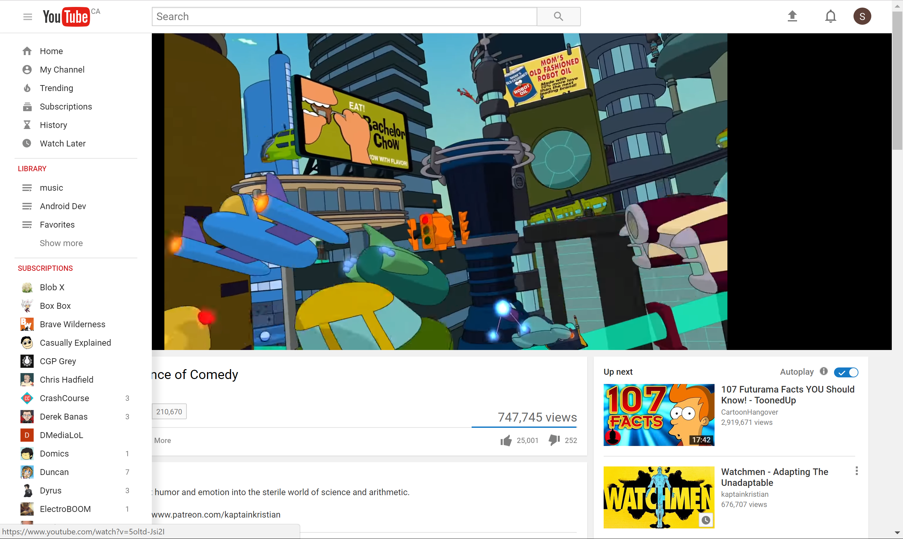From my own standpoint, their layout gave me the ability to focus on the main content while simultaneously providing me a menu of all my accomplishments. As a result, you could focus on both items (main content and projects) without needed to refresh or change the entire screen. It feels quicker and more intuitive that way.
Trade-Offs
There were a couple of trade-offs I had to make when I kept to this layout. The main problem is accommodating for different screen sizes. The phone is a vertical view port, while the laptop (or desktop) is a horizontal viewport. Simply, separating the screen horizontally will not work with a phone as the sections become too thin. I had to make a compromise resulting in making the user focus on one thing at a time for smaller screen sizes.
Conclusion
Prelude
This was a school group project that was designed to used GIS (graphical information system) data to mark locations and find the fastest path between them. It comes with a graphical user interface and a search bar; in essence it's just like google maps.
Design Goals
The full application was focused on being intuitive and functional. We defined intuitiveness to be its ability to work like most online mapping web applications like Google maps, Bing maps, and Apple maps. Second, functionality was defined by the constraints set by the course.
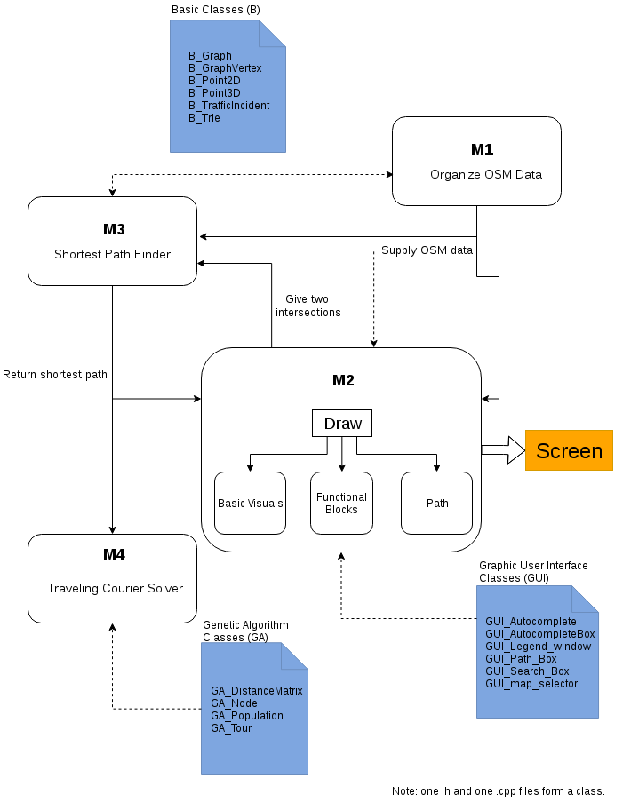Interface
Although the interface wasn't much of a problem, the difficulty was choosing the right colour palette for the map. What I noticed about the similarities between most online maps are a couple of things. First is that the main routes are always coloured in some mix of red - google maps and apple maps have the highways coloured orange, while bing maps it's purple. The purpose of this is to get the user's attention on what the important parts of the map should be.
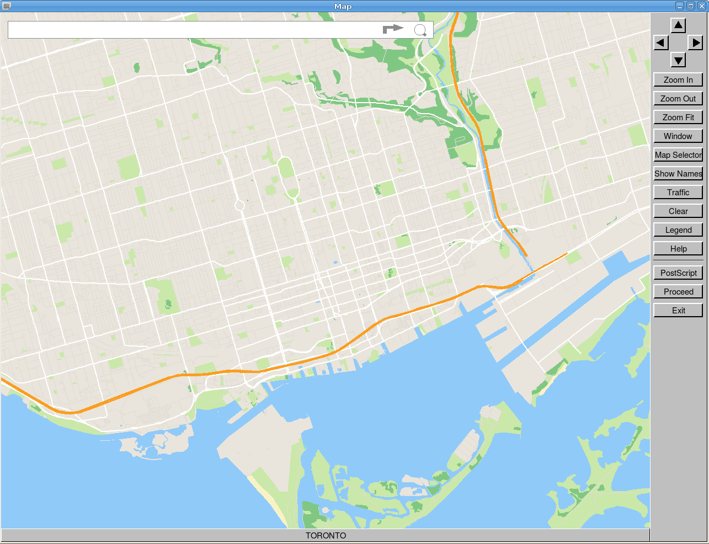
Algorithms
In section M4, the Travelling Courier Solver required to use the Shortest Path Finder to try to find the fastest path between two landmarks or intersections. Despite it being possible to find the shortest path between two intersections, the TSP (traveling salesman problem) that this program is designed to solve unfortunately harbours no absolute answer. There is only better.
Our approach to this problem was to use a genetic algorithm. In a nutshell like natural selection, it begins with an initial population and with each passing generation the children will become better adapted to the underlying pressures defined by the system. In this case the pressure is the the set with the longest overall path will be eliminated. Therefore algorithm speed, the ability to run through as many iterations (or generations) as possible is paramount. In order to optimize the final solution, I implemented multi-threading. Specifically this would allow our program to compute the fastest path between multiple intersections simultaneously. The result was a 14 percent increase in speed.
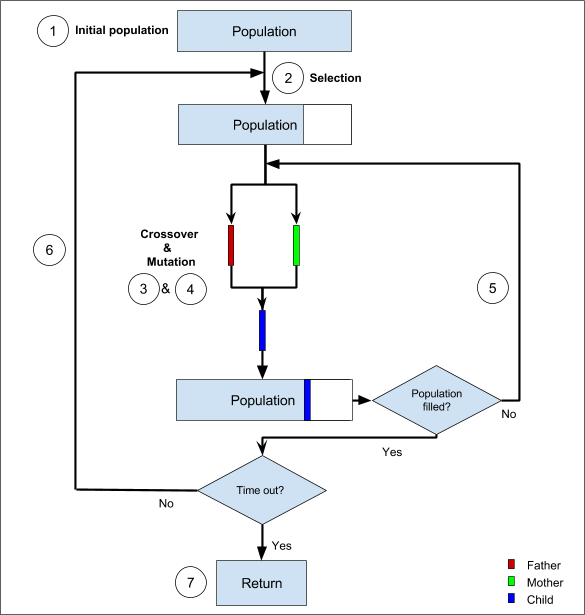Prelude
This one was a personal favorite of mine. Ever since I was a kid I have always been a big fan of Pokemon. So given complete creative freedom for this project, I had to naturally lean to my childhood.
Design Goals
There were no specific requirements for this project, so the only thing I was working towards was to make my game as authentic as possible.
Architecture
This entire thing was done in Verilog, a hardware description language (HDL). Unlike most programming languages, with Verilog I had to create custom hardware using a FPGA to control every single pixel on the screen. So how did I do it? The two main components that were needed was the control path and the data path. The control path is designed to send signals to the data path to tell it to run certain animations or drawings based on the input of the user. Control path == brain and the data path == the arms and legs.
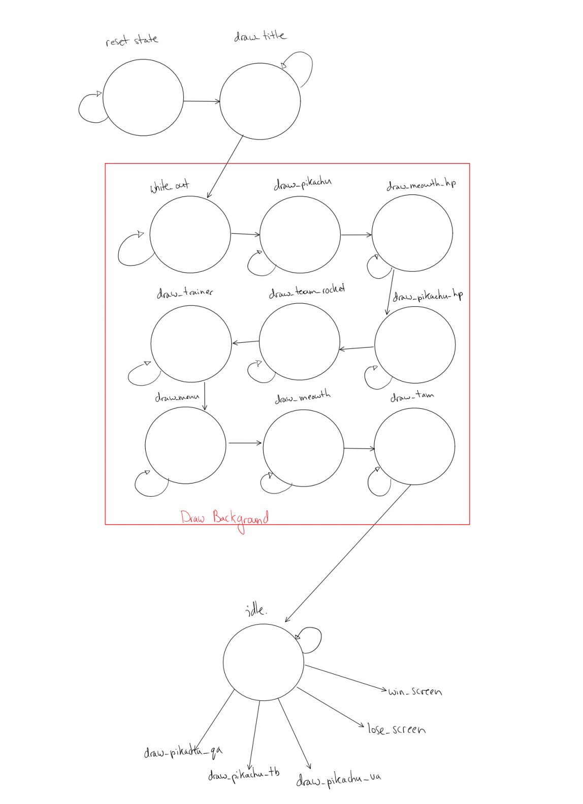 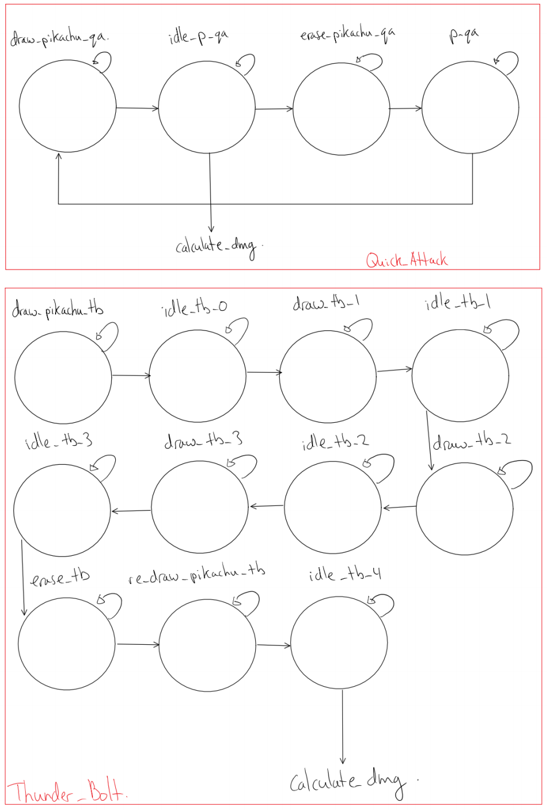 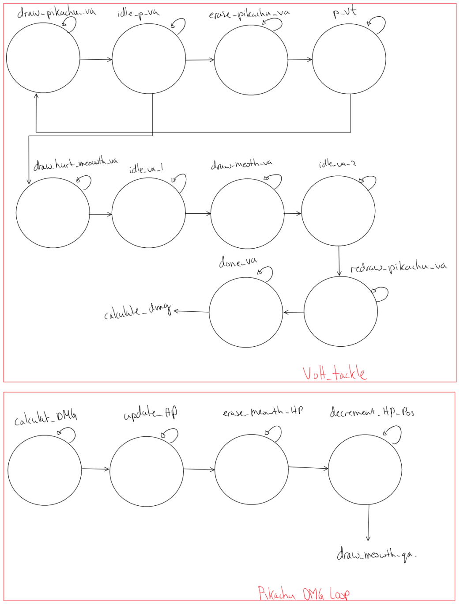 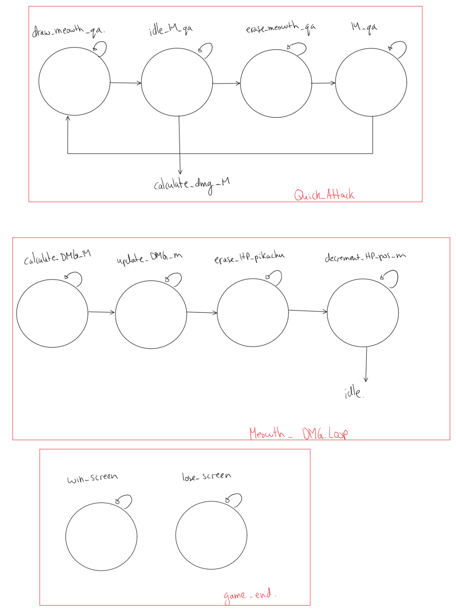 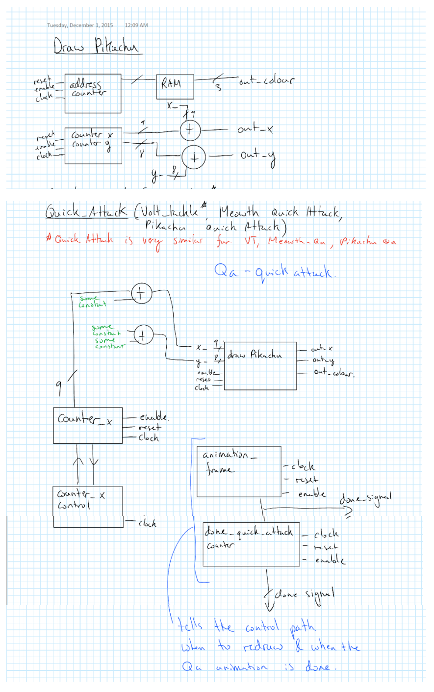 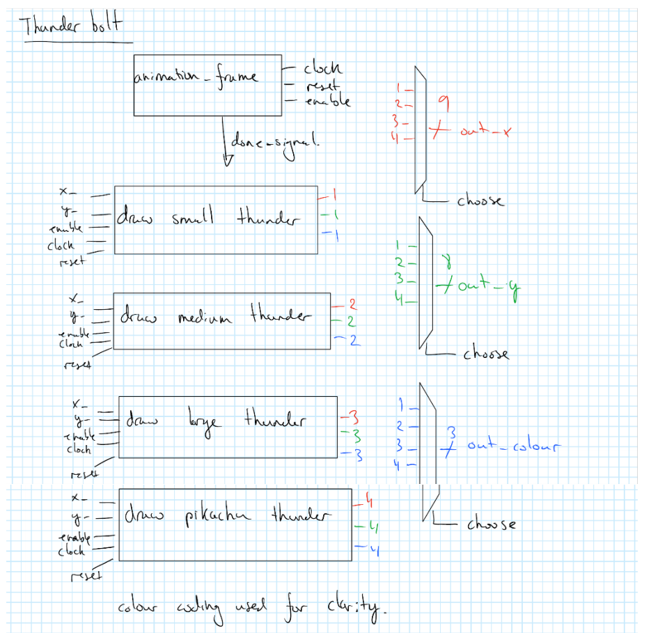 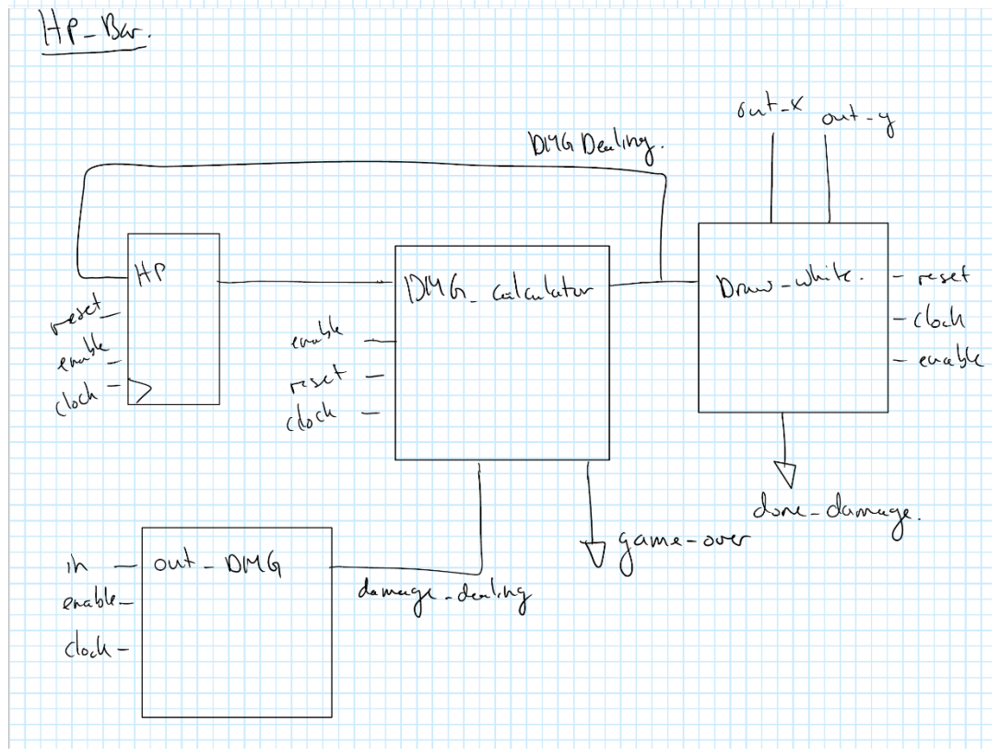